Home Gamerhome-sweptThe same family. More individual faces.
32 additional characters refined from Issue #58; 3 editable studies of the unchanged home crew. Palettes and accessories are not counted as new characters.

The three home foundations.
Home Cathome-calicoReview difference: editable vector rendering is cleaner than the painted home artwork. Pose/texture are not pixel-identical. The canonical raster stays untouched. Tiny sizes below are real 24/32/48px exports.
The 32 additional bases.
Emberswept Junipercurls
Junipercurls
Sorabuns
Orionundercut
Rowanwaves
Zuripuff
Asterpony
Cinderfox
Clovercalico
Pippintabby
Tundrahusky Mapleshiba
Mapleshiba
Mallowrabbit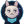
Bramblebear
Sorrelredpanda
Brookotter Banditraccoon
Banditraccoon
Quillowl
Togglebox
Sprigdragon
Nyxbat
Flicksalamander
Galegriffin